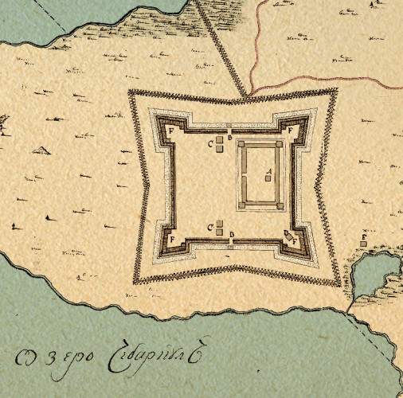
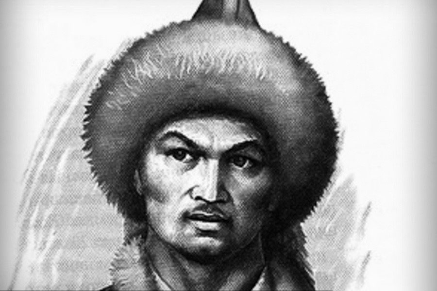

Какие были причины башкирских восстаний? Новое правительство Романовых совершенно не устраивало башкирский народ. Во-первых, был нарушен договор присоединения Башкортстана к Русскому Царству. Во-вторых, сильно повышались налоги на территорию. Также башкир сильно теснили другие народы, которые присваивали их землю. Кроме того коренной народ пытались христианизировать (из мусульман сделать христиан). Таким образом, право на вотчину (наследственную землю), независимою веру, а также башкирское самоуправление Романовы не исполняли. Не сложно догадаться, к чему такое отношение привело - начались конфликты, а потом восстания:
Восстание 1662—1664 годов. Основной причиной стало несоблюдение соглашения о добровольном вхождении. Также башкиры были недовольны увеличением налогов, произволом уфимского воеводы и чиновников.
В начале восстания захватчики под командованием Сары Мергена захватили несколько деревень, слобод (поселения при городе где у жителей была свобода от бояр) и два монастыря. А после башкирского захвата Кунгура (ныне город в Пермской области), осады Уфы, Мензелинска, а также разорения русских деревень, на борьбу с повстанцами была направлена царская армия с казанским князем Волконским. Около озера Иртяш (озеро в Челябинской области) состоялось крупное сражение.
Осенью власть провела переговоры, которые ни к чему не привели. Башкиры активно пытались поднять на восстания другие нерусские народы, и некоторые из них даже участвовали в продолжении мятежа: манси (малочисленный народ ныне Ханты-Мансийского АО), сибирские и кунгурские татары, мари, калмыки.
В начале 1663 года погиб Сар Мерген, его место занял потомок Сибирского хана Кучума - царевич Кучук. Монголо-татары долгое время хотели сделать антирусское наступление, а башкирское восстание было наилучшим поводом это сделать.
В итоге царская армия не сумела подавить восстание, из-за чего власти пришлось пойти на уступки: был решён земельный вопрос (вотчинное право башкир), понижены налоги и заменён уфимский воевода на Ф. И. Сомова, которого поставили по просьбе башкир. Первое восстание было удачным: все требования башкир были выполнены.
Восстание 1704-1711 годов. Прошло 40 лет, относительно спокойных в Башкортстане. Однако ситуация обострилась: собирателями налогов (прибыльщиками) были назначены Жихарёв и Дохов. Они летом 1704 года ввели 72 налога, а также в своём указе запрашивали 20 тысяч лошадей и 4 тысячи воинов (т. к. велась Северная война со Шведцией). Именно Жихарёвым и Доховым была проделана попытка христианизации башкир: они требовали строить мечети по виду христианских храмов.
Оставлять всё так башкиры не стали - начались мятежи; чтобы закончить всё мирно, к царю Петру I был отправлен один из предводителей восстания Ишкеев с жалобой на прибыльщиков. Правительство отказалось рассматривать жалобу, Ишкеев был повешен, а другие послы арестованы. Началось массовое башкирское восстание.
К Башкирии стягивались правительственные войска. Народ отказался от выплаты налогов, а членами Курултая была предпринята попытка отделиться от Русского царства и образовать Башкирское ханство, однако неудачно. На реке Белой ногайскими и казанскими башкирами был разбит полк Хохлова. В башкирской столице карательный отряд полковника Сергеева, против которого башкирами велась активная борьба. Помимо Башкортстана, восстания начались тюркскими народами (горцами, аксайцами, чеченцами) на Северном Кавказе. Также в войну ввязались народы Зауралья и Западной Сибири.
К 1710 году силы повстанцев ослабли, на этом отразилось поражение калмыцким войскам, воевавших на стороне правительства. Через год ногайские башкиры попытались вновь противостоять русским, но безуспешно. Хоть и восстание было подавлено силой, правительство снова юридически признало вотчинное права башкир, отменило новые налоги, осудило произвол Дохова и Жихарёва, а также полковника Сергеева. Троица была казнена. Можно сделать вывод, что вторым крупным восстанием башкиры вновь доказали свои права, хотя ценой огромных потерь.
Восстания 1735-1740 годов. В 1734 году правительством было решено построить новый город - Оренбург. На башкирском собрании (курултае) намерение о возведении города было воспринято, как попытка лишения вотчинного права и башкирского самоупраления. Курултаем было принято решение любым способом помешать строительству. В начале 1735 были отправлены посланики с требованием отменить строительсво Оренбурга, однако напрасно - они были подвергнуты пыткам, один из них скочался. Это послужило началом восстания. Вологодский полк атаковал 3-х тысячный отряд Нурушева (член курултая, башкирский феодал). На подавление повстанчиского движения был направлен полк Румянцева, начали действовать карательные отряды. Уже к 1736 году восстание было почти подавлено, начался жёсткий контроль внутреннего управления Башкортстана. Можно сказать, именно в это время был уничтожено независимое самоуправления башкир, т. к. была полностью разрушена Азиева мечеть - место, где многие века существования башкирских племён проходило заседание курултая.
В 1737 году ногайские башкиры вновь начали сопротивление, ими были атакованы Чебаркульская, Челябинская, Красноуфимская крепости (ныне это крупные города: Челябинск, Чебаркуль и Красноуфимск). К началу 1738 года крепости вновь подверглись нападению. В ответ на это правительственные войска под командывание Соймонова уничтожили более 30 башкирских деревень, было убито около 900 человек. Под страхом полного окружения, башкиры пошли на переговоры, а после капитуллировали. Соймонов с большой уверенностью говорил, что силы у восставших иссякли и больше вести борьбу они просто-напрасто не способны.
Хотя силы башкир катастрофически истощились, в 1739 году в Сибирской части нынешнего Башкортстана начался мятеж. Его причиной стала перепись населения, воспринятая башкирами как обложение новыми налогами. Из-за недовольства башкирского народа, перепись прекратилась на 4 месяца, однако в декабре 1739 года вновь продолжилась. Сибирских башкир возглавил Карасакал ("Чёрная Борода" - в прямом переводе с башкирского), в историю он вошёл как хан Башкирии Султангирей. Вскоре под его командыванием всю территорию Сибирского Башкортстана охвотило восстание, снова начались бои с царской армией. Карасакал расчитывал на помощь казахов (Жузов), но они отказали в помощи. Кроме того башкирский народ уже мало поддерживал восставших, даже были «верные башкиры», сражавшиеся на стороне русской армии. Карасакал проиграл четыре сражения и был вынужден бежать с остатками своих войск на Урал. В 1741 году последние башкирские повстанцы были схвачены. Череда востаний 30-х XVIII века закончилась поражением башкир, было убито более 40 тысяч человек.
Крестьянская война, новое восстание 1773-1775 годов. Новое восстание было поднето уже не башкирами, а яицками казакими, башкиры же, как и татары, мишари, другие проживающие здесь народы, были участниками. Оренбургская губерния начала жёсткий контроль над свободолюбивыми казаками, вследствии чего были вызваны вооружённое столкновение казаков и оренбурских служивых. В то время подобных мятежей было много, но они быстро утихали. Однако, ситуация в Оренбурге стремительно ухудшалась, гарнизон сдавал позиции. В Оренбург немедленно были направленны царские войска, которые положительно повлияли на ситуацию. Началось стягивание народов к Оренбургу, на помощь предводителю яицких казаков - Пугачёву.
Итак, башкиры направились к Оренбургу, на помощь казакам. Правительсвенные войска потеряли превосходство, и вскоре началась осада города. Необходимо было закрипиться, с этой целью к Уфе был направлен отряд, который должен был захватить башкирскую столицу. Однако с первого раза город взять не удалось, Пугачёвым было отправлено подкрепление. Под командыванием казака Зарубина началась осада Уфы, войска Салавата Юлаева захватили крепость Красноуфимск, и начали осаждать Челябинск. Правительство было напугано, ведь началось массовое восстание, которое уже несло реальную угрозу российскй монархии. Огромная правительственная армия была направлена в Приволжье.
Уже весной 1774 года правительственная армия нанесла первое крупное поражение войскам Пугачёва под Оренбургом, осада города прекратилась. Между этим, были освобождены Уфа, а также Красноуфимская и Челябинская крепости. Пугачёв, надеясь, что от башкир он получит необходимую поддержку, со своими соратниками отправился в Башкирию. Дворянское общество было уверено, что с самозванцем (Пугачёвым) покончено. Однако они ошиблись - башкиры в количестве более 10 тысяч человек присоединились к Емельяну. Теперь пугачёвская армия, снабжённая новейшим военным арсеналом (с уральских заводов), двинулась на Казань. Стоит сказать, что если Оренбург был «сердцем» восстания, то Башкирия стала «лёгкими», которые снабжали драгоценным «кислородом» повстанцев. По этой причине, Салават Юлаев со своим отрядом и верным ему народом остался здерживать наступающую царскую армию.
Снова началась осада Уфы, но укреплённый уфимский гарнизон стоял. Осада вновь провалилась, со своей армией Салават двинулся за реку Ай, в Западную Башкирию, стремясь соединиться с пугачёвской армией. Между этим, войска Пугачёва проиграли ряд боёв за татарскую столицу, позже остатки войск вместе в со своим атаманом бежали на восток. Началось массовое расслоение русских и башкирских войск, которые окончательно пали духом. Приближённые Пугачёва затеяли заговор против атамана, чтобы получить помилование от царской власти; к этому времени большинство башкирских повстанцев перешли на сторону правительства. Пугачёв был схвачен заговорщиками и выдан власти. Дальше началось следствие, а потом на Болотной площади в Москве состоялась казнь. К тому времени в неравном бою с царскими войсками Салават Юлаев со своим отцом (Юлаем Азналином) были схвачены.
Салавату Юлаеву было назначено 175 ударов плети ежедневно, его отцу 150 ударов. Прошёл почти год (ноябрь 1774 - октябрь 1775) мучительных допросов и пыток, которые ни к чему не привели - Салават и Юлай молчали. Уже 2 октября они были отправлены на каторгу Рогервик (Балтийский порт). По некоторым сведеньям Салават умер в 1800 году, по-прежнему находясь на каторге, и был похоронен недалеко от порта в Палдиски, там ему установлен памятник. Хотя, как сказано выше, многие башкиры самовольно прекратили восстание, всё равно они считали Салавата Юлаева героем, несмотря на запрет со стороны правительства. Подробнее ознакомиться с Салаватом Юлаевым Вы можете на нашем сайте.
Крестьянское восстание закончилось поражением повстанцев: было сожжено тысячи деревень, а число жертв привысило 40 тысяч человек. Однако, восставшие крестьяне нанесли тяжёлый урон дворянскому строю.
Итоги восстаний. Первые башкирские восстания, вызванные невыполнением соглашений вступления в состав России, принесли положительный результат - вотчинные и религиозные права башкирского народа были восстановлены. Но с каждым последующим конфликтом с башкирами, царское правительство увеличивало влияние, постепенно контролируя всю феодальную верхушку башкирской власти. Хотя в последнем крестьянском восстании башкиры, наравне с яицкими казаками, внесли непостижимый вклад, крупнейший мятеж был жестоко подавлен властью - царизм одержал верх. Но не смотря на это дворянскому сословию был нанесён огромный ущерб от крестьянства. Именно благодаря последнему, крупнейшему восстанию 1773 года, начала зарождаться дружба русского и башкирского народа, в особенности крестьянства.